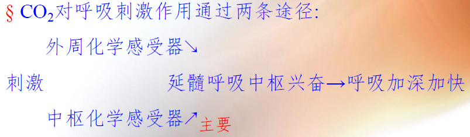

生物医学工程 | 解剖学 - 呼吸系统
呼吸系统
呼吸：机体与外界进行气体交换的过程
呼吸道：鼻，咽，喉，气管，支气管
肺：气体交换的场所
外呼吸：肺毛细血管血液与外界环境之间的气体交换过程
内呼吸：组织毛细血管中血液通过组织液与组织细胞间实现的气体交换
肺通气：肺与外界环境之间的气体交换过程
肺换气：肺与肺毛细血管中血液之间的气体交换过程
气体运输：循环血液将从肺运输到全身组织、细胞以及将从细胞运输到肺的过程。
鼻前庭：过滤空气的第一道屏障
固有鼻腔：分为上中下三个鼻甲。嗅区（上鼻甲），呼吸区（嗅区以外的部分，由上皮细胞，血管，腺泡组成，湿润净化温暖空气）
鼻旁窦：鼻腔周围含有空气的骨腔隙
声带：声襞以及由其覆盖的声韧带和声带肌三者组成的结构
黏液屏障：杯状细胞和气管腺的分泌物共同形成
细支气管：肺叶支气管-细支气管/终末细支气管-呼吸性细支气管-肺泡/肺泡管/肺泡囊
肺小叶：肺内细支气管及其所属的肺组织。是构成肺的基本结构和功能单位
肺的功能：气体交换，呼吸通道
功能血管：肺动、静脉及其毛细血管。进行气体交换
营养血管：支气管动、静脉及其毛细血管。为肺内各级支气管提供氧气和营养物质
肺泡：气体交换场所。单层上皮细胞，可以分为Ⅰ和Ⅱ型两类，Ⅰ-气体交换；Ⅱ-分泌表面活性物质，可转换为Ⅰ
胸膜腔：脏层和壁层之间封闭的腔隙
呼吸
肺通气：呼吸运动过程与形式
过程：
- 外呼吸（血液-外界）：肺通气（肺泡-外界）+肺换气（肺泡-血液）
- 气体运输（组织←→肺）
- 内呼吸（血液-组织）
呼吸运动的过程：
平静吸气：膈肌和肋间外肌收缩→胸腔和肺的容积增大→肺内气压下降→外界气流流入肺
平静呼气：膈肌和肋间外肌舒张→胸腔和肺的容积减小→肺内气压上升→外界气流流出肺
用力吸气：膈肌、肋间外肌、吸气肌收缩→胸腔和肺的容积增大→肺内气压下降→外界气流流入肺
用力呼气：膈肌、肋间外肌、呼气肌舒张→胸腔和肺的容积减小→肺内气压上升→外界气流流出肺
呼吸运动的形式：
腹式呼吸和胸式呼吸：以隔肌舒缩活动为主的呼吸运动称为腹式呼吸。以肋间外肌舒缩活动为主的呼吸运动称为胸式呼吸。
平静呼吸和用力呼吸：吸气是主动的，呼气是被动的，这种呼吸运动称为平静呼吸
肺内压、胸膜腔负压
肺内压的变化
胸腔膜负压成因：与肺和胸廓的自然容积不同有关。发育速度：胸廓＞肺；→自然容积：胸廓＞肺。∴ 胸腔膜内压=肺内压-肺回缩压。肺内压最大=大气压，肺始终处于扩张状态而倾向于回收，∴ 胸腔膜内压始终为负压
胸腔膜负压意义：1）利于肺扩张；2）促进胸腔大静脉血液和淋巴液回流
气胸：胸壁/肺破裂，胸腔膜与大气相通，空气将立即来自外界或肺泡进入负压的胸腔膜内。导致：1）肺不再随胸廓的运动而节律性扩张和缩小；2）血液淋巴回流减少
弹性阻力、非弹性阻力
呼吸阻力可以分为 弹性阻力 和 非弹性阻力
弹性阻力：胸廓和肺组织的弹性回缩力
影响因素：肺总容量（容量↑顺应性↑阻力↓），肺表面活性物质（使肺泡缩小。阻力↑），肺自身弹力纤维和胶原纤维（牵张↑回弹力↑阻力↑吸气难呼气容易）
非弹性阻力来源：惯性阻力（气流变速产生的阻力），黏滞阻力（位移产生的摩擦），气道阻力（主要）
肺通气
肺容量：肺容纳的气量
肺活量：一次呼吸时能达到的最大通气量
肺通气量=潮气量×呼吸频率：肺每分钟吸入或呼出的气体总理
肺泡通气量=（潮气量-解剖无效腔气量）×呼吸频率：每分钟吸入肺泡的新鲜空气量
无效腔：包含解剖无效腔和肺泡无效腔。肺泡/呼吸道内的结构导致部分气体不参与气体交换
肺换气与运输
动力：气体的分压差
影响因素：1）呼吸膜厚度（-）2）呼吸膜面积（+）3）通气/血流比值（增大减小都妨碍换气）
CO_2运输方式：碳酸氢盐（多）和氨基甲酸血红蛋白（少-无需酶）


呼吸和氧气
氧离曲线及其影响因素
概念：表示与氧饱和度之间关系。可以反应不同下与结合与解离情况

氧解离曲线上段（右段）：比较平坦
氧解离曲线中段：较陡，反映释放的部分
氧解离曲线下段（左段）：反映与解离的部分
影响因素：
pH和的影响：pH↓，↑：→血红蛋白对氧气亲和力↓，解离曲线右移
温度：温度↑：解离曲线右移，促进氧气释放
2，3-二磷酸甘油酸（2，3-DPG）：↑，Hb对O2亲和力↓，解离曲线右移
呼吸中枢
呼吸中枢位置：分布在包括大脑皮层、间脑、脑桥、延髓和脊髓等部位。
脊髓-支配呼吸肌；脑桥和延髓-呼吸基本节律产生部位；脑桥-呼吸调整中枢；延髓-基本呼吸节律中枢
外周与中枢化学感受性反射的方式、肺牵张反射概念
外周化学感受性（刺激因素：↓ ↑ ↑）
中枢化学感受器（延髓腹外侧浅表位置头尾，刺激因素：脑脊液的↑。通过血脑屏障使↑）
肺牵张反射：肺扩张/肺萎陷引起的吸气抑制/吸气兴奋反射。包括肺扩展反射和肺缩小反射
肺扩张反射：肺扩张时抑制吸气活动。肺扩张→平滑肌的牵张感受器→迷走神经→延髓
肺缩小反射：肺萎陷时增强吸气活动。
CO2、缺氧、H+对呼吸运动的的影响
CO2：最重要的调节因素。两条途径。中枢-主要

H+：两条途径。外周-主要
O2：完全通过外周化学感受器
| 影响因素 | 对呼吸的影响 |
|---|---|
| CO2↑ | 先增强后抑制 |
| H+↑ | 增强 |
| O2 | 先增强后抑制 |
“最”
甲状软骨：喉软骨中最大的一块
环状软骨：喉软骨中唯一呈环形的软骨
喉前庭：喉腔三部中容积最小的
声门裂：喉腔最狭窄的部分
肋膈隐窝：胸膜腔最低处
声明：此blog内容为上课笔记，仅为分享使用。部分图片和内容取材于课本、老师课件、网络。如果有侵权，请联系aursus.blog@gmail.com删除。